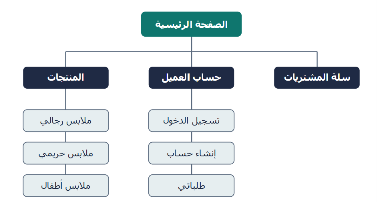

المقدمة
أصبح التخطيط للمواقع الإلكترونية خطوة أساسية قبل البرمجة، حيث يساعد على تحديد هدف الموقع وتنظيم صفحاته وتوزيع محتواه، مما يقلل الأخطاء ويوفر الوقت والجهد ويضمن سهولة الاستخدام.
يبدأ إنشاء الموقع الإلكتروني الناجح بالتخطيط قبل البرمجة، من خلال تحديد هدف الموقع وتنظيم صفحاته ورسم شكله المبدئي. ويساعد ذلك على توضيح متطلبات المشروع، وتسهيل التنقل بين الصفحات، وتقليل الأخطاء وتوفير الوقت والجهد، لضمان تجربة استخدام سهلة وفعّالة.
عرض الموضوع
أولًا: ما هو التخطيط للمواقع الإلكترونية؟
هو مرحلة استباقية لتحديد هيكل الموقع وتنظيمه قبل البرمجة والتصميم، ويقوم على عنصرين رئيسيين:
- خريطة الموقع (Sitemap): لتنظيم وترتيب الصفحات والعلاقات فيما بينها.
- الإطار الهيكلي (Wireframe): لتوزيع العناصر المرئية (قوائم، صور، أزرار) بشكل مبسط دون ألوان أو تفاصيل نهائية.
ثانيًا: لماذا نرسم شكل الموقع قبل البرمجة؟
تكمن الأهمية في خمس نقاط رئيسية:
- توضيح الفكرة: تحويل المفاهيم المجردة إلى تصور مرئي واضح لفريق العمل.
- اكتشاف الأخطاء مبكرًا: تدارك مشكلات تنظيم المحتوى وتعديلها بسهولة قبل كتابة الأكواد.
- تسهيل التواصل: توحيد الرؤى بين صاحب المشروع والمصمم والمبرمج.
- توفير الوقت والجهد: تقليل التعديلات الفوضوية أثناء مرحلة التنفيذ والبرمجة.
- تحسين تجربة المستخدم: ضمان سهولة التنقل وسرعة الوصول للمعلومات منذ البداية.
ثالثًا: أهمية تنظيم صفحات الموقع قبل البرمجة
لا يقتصر نجاح الموقع على المظهر البصري والجمالي فحسب، بل يتطلب تنظيمًا منطقيًا للصفحات لضمان سهولة الفهم والوصول للمعلومات دون إرباك للمستخدم.
مفهوم هندسة المعلومات
هي العملية الشاملة لتنظيم وتصنيف المحتوى والصفحات وتحديد العلاقات بينها، بالإضافة إلى تسمية العناصر وإعداد قوائم التنقل، وهي مفهوم أوسع وأعمق من مجرد حصر أو إعداد قائمة بالصفحات.
أبرز فوائد تنظيم الصفحات
- سهولة التنقل: تمكين المستخدم من الانتقال المباشر والسلس بين الصفحة الرئيسية والصفحات الفرعية.
- وضوح المحتوى: تجميع وتصنيف المعلومات المتشابهة داخل أقسام محددة ومنطقية بدلًا من التوزيع العشوائي.
- تقليل الارتباك: اعتماد أسماء واضحة ومباشرة للصفحات والقوائم ليدرك المستخدم وجهته بدقة.
- سهولة التوسع مستقبليًا: إمكانية إضافة صفحات أو خدمات جديدة في المستقبل دون المساس بالنظام العام للموقع.
- تحسين الوصول للمعلومات: اختصار الوقت والجهد اللازمين للمستخدم للوصول إلى المحتوى الذي يبحث عنه.
مثال تطبيقي على تنظيم هيكلية الموقع (متجر ملابس)
تتضح العلاقة بين الصفحات الرئيسية والفرعية من خلال التجميع الهيكلي التالي:

رابعًا: أهم أدوات التخطيط للمواقع الإلكترونية
هناك مجموعة من الأدوات والأساليب التي تساعد في التخطيط للمواقع قبل البرمجة، ومن أبرزها:
| الأداة | التعريف | الفائدة |
|---|---|---|
| خريطة الموقع (Sitemap) | مخطط يوضح صفحات الموقع وعلاقاتها ببعضها، ويحدد مستويات الصفحات الرئيسية والفرعية. | اكتشاف الصفحات الناقصة أو التكرار غير الضروري قبل التنفيذ. |
| الإطار الهيكلي (Wireframe) | رسم مبسط يوضح توزيع العناصر داخل صفحة الويب، مثل العنوان والصورة والقائمة والأزرار. | التركيز على ترتيب المحتوى ووظائف العناصر بدلًا من الألوان والتفاصيل الجمالية النهائية. |
| النموذج التفاعلي (Prototype) | نموذج يحاكي طريقة تفاعل المستخدم مع الموقع، مثل الضغط على الأزرار والانتقال بين الشاشات. | اختبار الأفكار وفهم طريقة الاستخدام قبل تنفيذ الموقع بصورة كاملة. |
| مخطط تدفق المستخدم (User Flow) | يوضح الخطوات التي يتبعها المستخدم لتحقيق هدف معين، مثل البحث عن منتج ثم إضافته إلى السلة ثم إتمام الشراء. | اكتشاف الخطوات غير الضرورية أو المعقدة. |
ومن الممكن تنفيذ هذه المخططات على الورق في المشروعات الصغيرة، أو باستخدام أدوات التصميم الرقمية عند العمل على مشروعات أكبر.
خامسًا: مراحل التخطيط للموقع الإلكتروني قبل البرمجة
يمر التخطيط للمواقع الإلكترونية بعدة مراحل مترابطة، وتساعد كل مرحلة على تجهيز الموقع للتصميم والتنفيذ بصورة صحيحة.
- المرحلة الأولى: تحديد هدف الموقع. يجب تحديد الغرض الأساسي من إنشاء الموقع، مثل بيع المنتجات أو تقديم الخدمات أو نشر المعلومات أو عرض أعمال شركة معينة. ويساعد ذلك على معرفة الصفحات والوظائف التي يحتاج إليها الموقع.
- المرحلة الثانية: تحديد الجمهور المستهدف. يجب معرفة الأشخاص الذين سيستخدمون الموقع، واحتياجاتهم، ومستوى خبرتهم في استخدام التكنولوجيا، والأجهزة التي يعتمدون عليها.
- المرحلة الثالثة: تحديد الصفحات والمحتوى. يتم إعداد قائمة بالصفحات التي يحتاج إليها الموقع وتحديد المحتوى الموجود في كل صفحة؛ فقد يحتوي موقع تعليمي مثلًا على صفحة رئيسية وصفحة للدورات وصفحة للمدربين وصفحة للتسجيل وصفحة للتواصل.
- المرحلة الرابعة: إنشاء خريطة الموقع. يتم رسم مخطط يوضح ترتيب الصفحات الرئيسية والفرعية والعلاقات بينها، بحيث يكون الهيكل واضحًا قبل البدء في البرمجة.
- المرحلة الخامسة: رسم الإطار الهيكلي للصفحات. يتم رسم شكل مبدئي لكل صفحة مهمة، مع تحديد أماكن العناوين والصور والنصوص والقوائم والأزرار. ويمكن البدء برسم بسيط على الورق ثم تطويره باستخدام أدوات التصميم.
- المرحلة السادسة: مراجعة التخطيط واختباره. يتم عرض المخططات على فريق العمل أو بعض المستخدمين للتأكد من وضوح الصفحات وسهولة الوصول إلى المعلومات، ثم تُجرى التعديلات اللازمة قبل الانتقال إلى التصميم النهائي والبرمجة.
سادسًا: ماذا يحدث إذا بدأنا البرمجة دون تخطيط؟
البدء في البرمجة دون تخطيط واضح قد يؤدي إلى عدد من المشكلات، من أهمها:
- عدم وضوح هيكل الموقع: قد يكتشف فريق العمل لاحقًا أن صفحات أساسية مفقودة أو أن ترتيب الصفحات غير مناسب.
- زيادة التعديلات: قد يحتاج المبرمج إلى تغيير أجزاء من الكود أكثر من مرة بسبب عدم الاتفاق على الشكل المطلوب من البداية.
- ضعف تجربة المستخدم: قد يجد الزائر صعوبة في الوصول إلى المنتجات أو الخدمات أو المعلومات التي يبحث عنها.
- عدم تناسق الصفحات: قد تختلف طريقة عرض القوائم والأزرار والمحتوى بين الصفحات دون سبب واضح.
- صعوبة التطوير المستقبلي: قد تصبح إضافة ميزات جديدة أصعب إذا لم يكن هيكل الموقع منظمًا.
وتؤكد أبحاث مجموعة نيلسن نورمان أن خرائط المواقع تساعد على فهم بنية المحتوى، وأن تنظيم الصفحات والتنقل من العناصر المهمة التي تؤثر في قدرة المستخدم على العثور على المعلومات.
ومع ذلك، لا يعني التخطيط أن كل التفاصيل يجب أن تكون نهائية قبل كتابة أي كود؛ فمن الممكن أن تتغير بعض القرارات أثناء التطوير. والهدف هو وضع أساس واضح يقلل الأخطاء، مع الاحتفاظ بالمرونة اللازمة للتحسين.
سابعًا: العلاقة بين التخطيط والتصميم والبرمجة
التخطيط والتصميم والبرمجة مراحل متكاملة، لكنها تؤدي وظائف مختلفة:
| المرحلة | الهدف الأساسي | مثال |
|---|---|---|
| التخطيط | تحديد الهدف والصفحات وترتيب المحتوى | رسم خريطة صفحات المتجر |
| التصميم | تحديد المظهر البصري والألوان والخطوط | تصميم شكل صفحة المنتجات |
| البرمجة | تحويل التصميم إلى موقع يعمل فعليًا | بناء الصفحات وربطها بقاعدة البيانات |
| الاختبار | التأكد من صحة العمل وسهولة الاستخدام | تجربة تسجيل الدخول وإتمام الشراء |
يساعد اتباع هذا الترتيب على بناء الموقع بصورة أكثر تنظيمًا. وفي الوقت نفسه، يمكن أن تتداخل بعض المراحل؛ فقد يكشف الاختبار عن مشكلة تتطلب العودة إلى التصميم أو تعديل التخطيط.
الخاتمة
في النهاية، يُعد التخطيط للمواقع الإلكترونية خطوة أساسية لا ينبغي تجاهلها قبل البدء في البرمجة. فرسم شكل الموقع وتنظيم صفحاته يساعدان على تحويل الأفكار إلى خطة واضحة، وتحديد احتياجات المشروع، وتسهيل التعاون بين أعضاء الفريق، وتقليل الأخطاء والتعديلات، وتحسين تجربة المستخدم.
كما أن استخدام أدوات مثل خريطة الموقع والإطار الهيكلي والنموذج التفاعلي يجعل عملية تطوير الموقع أكثر وضوحًا وتنظيمًا. ولذلك فإن نجاح الموقع الإلكتروني لا يعتمد على جودة البرمجة وحدها، بل يعتمد أيضًا على التخطيط الجيد الذي يسبقها، وعلى مراجعة الموقع وتحسينه باستمرار وفقًا لاحتياجات المستخدمين.
المراجع
- Nielsen Norman Group — Information Architecture vs. Sitemaps (شرح هندسة المعلومات وخريطة الموقع)
- Digital.gov — Wireframes (تعريف المخططات الهيكلية وكيفية إعدادها واستخدامها)
- Yale University — Wireframes (أهمية المخططات في تنظيم الصفحات وتجربة المستخدم)
- Ministry of Justice — Organising your site (تنظيم محتوى الموقع وفق احتياجات المستخدم)